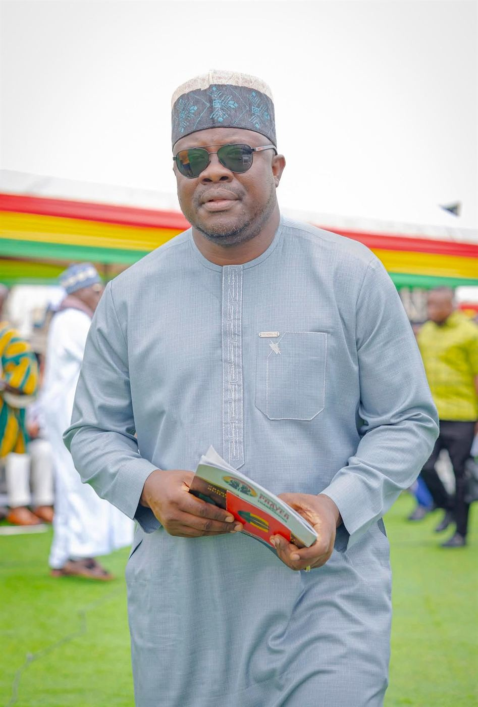
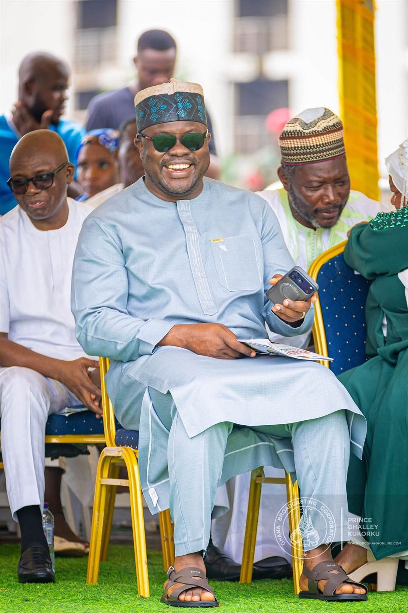
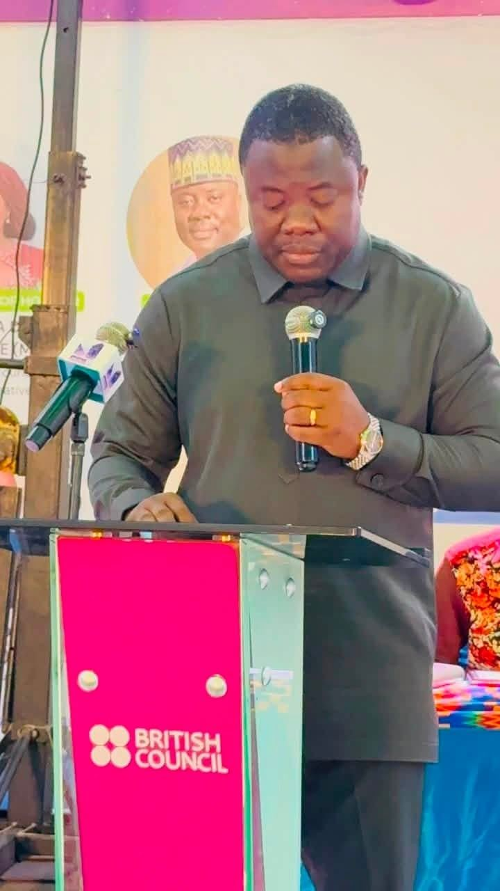
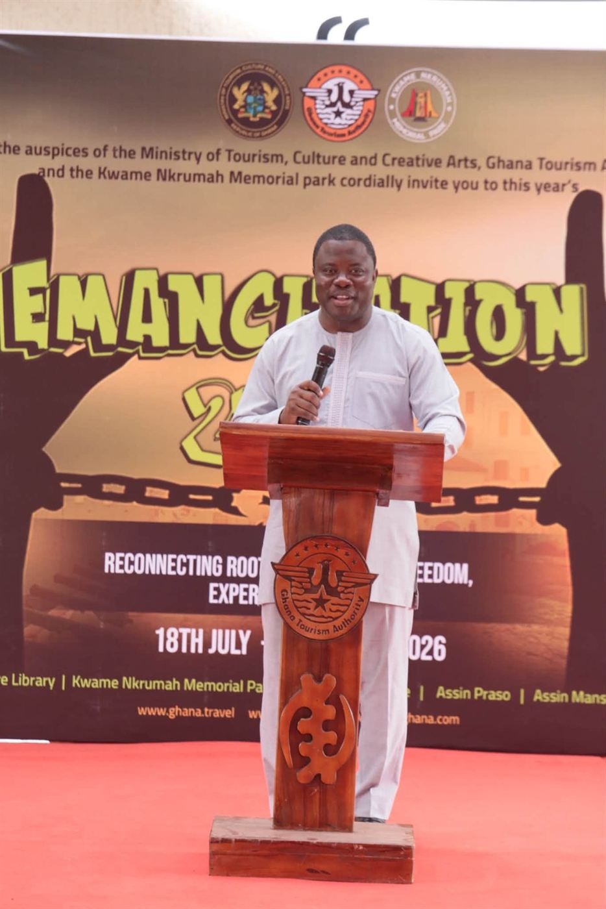
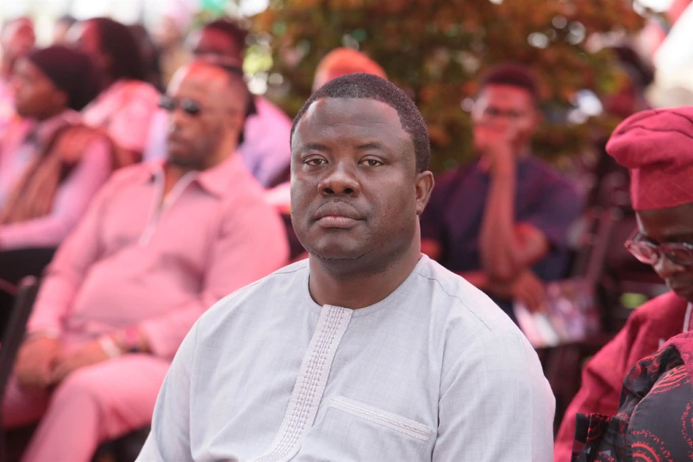

Chapter 01 · The Man
The man from Maamobi.
Born to Bole in the Savannah Region, raised in the Zongo communities of Accra, and educated on three continents' worth of discipline: this is the story of a representative who never left home.

Roots
A son of the Zongo.
Yussif Issaka Jajah's story begins in Bole and grows up in the crowded, generous streets of Maamobi, Nima and Accra New Town. These are communities where everyone knows whose child you are, where reputations are built at the mosque, the market and the football pitch, and where a promise made is remembered for decades.
That upbringing is not a talking point. It is the operating manual. He governs the way the Zongo raised him to: present, accessible and accountable to neighbours who have known him since childhood.


The Training
Finance, energy, discipline.
From Accra High School he built a career-grade education in finance and energy: a BSc from the University of Professional Studies, Accra, an MBA in International Oil and Gas Management from the University of Dundee in Scotland, an MSc in Energy Economics and an MPhil in Development Finance from GIMPA.
Before politics he worked as an oil and gas consultant and served as a research fellow with the Inter-Ministerial Coordinating Committee on Decentralisation, studying how government actually delivers, or fails to deliver, at the local level.
- Secondary
- Accra High School
- BSc
- University of Professional Studies, Accra
- MBA, Oil & Gas Management
- University of Dundee, Scotland
- MSc & MPhil
- Energy Economics · Development Finance, GIMPA
Public Life
Parliament and the Ministry.
First elected in 2016 and returned with a larger share of the vote in 2020, then again in 2024, he sits on the Finance Committee and the Roads and Transport Committee, the two rooms where a constituency like Ayawaso North either gets budgeted for or gets forgotten.
In 2025 he was appointed Deputy Minister for Tourism, Culture and Creative Arts, carrying a portfolio with real economic upside for young Ghanaians into which he brings a development finance lens.

